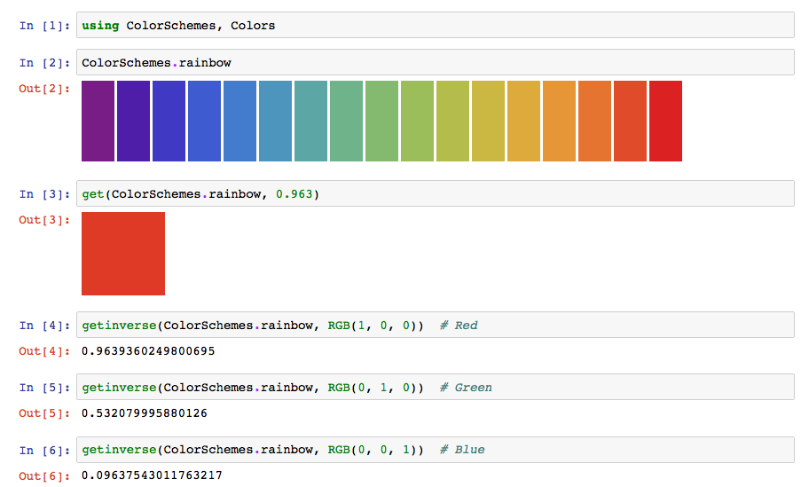
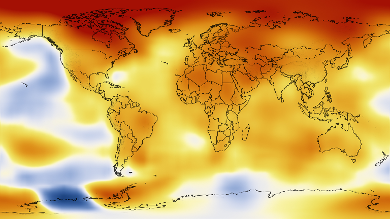
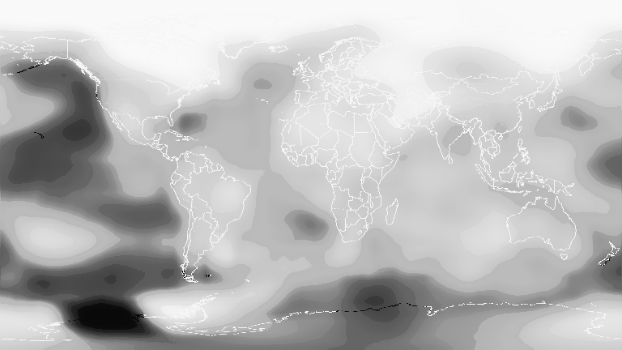

Finding colors in colorschemes
ColorSchemes.jl provides the function getinverse(cscheme, c) which is the inverse of get(cscheme, x).
This function returns a value between 0 and 1 that places a color within a colorscheme by converting the color to a value representing its position on the colorscheme's axis.

Example
One example use for getinverse() is to convert a heatmap image into an Array of continuous values, e.g. temperature.
In this example, we will convert a heatmap image representing elevation in the United States into an Array of elevation values. The image represents global temperature anomalies averaged from 2008 through 2012, with blue as -2 C and Red as +2 C. Higher than normal temperatures are shown in red (red is +2°C) and lower than normal temperatures are shown in blue (blue is -2°C). The global surface temperature in 2012 was +0.55°C. source.
using Images, FileIO
img = download("https://www.nasa.gov/images/content/719282main_2008_2012_printdata.1462.jpg") |> load
img = imresize(img, Tuple(Int(x) for x in size(img) .* 0.2));
display(img)
temps = [getinverse(ColorSchemes.temperaturemap, pixel) for pixel in img]
432×768 Array{Float64,2}:
0.975615 0.975615 0.975615 0.975615 … 0.975615 0.975615 0.975615
0.975484 0.975767 0.975615 0.975615 0.975615 0.975615 0.975767
0.975615 0.975615 0.975615 0.975615 0.975615 0.975615 0.975615
0.975615 0.975615 0.975615 0.975615 0.975615 0.975615 0.975615
0.975615 0.975615 0.975615 0.975615 0.975615 0.975615 0.975615
0.975615 0.975615 0.975615 0.975615 … 0.975615 0.975615 0.975615
0.975615 0.975615 0.975615 0.975615 0.975615 0.975615 0.975615
0.975615 0.975615 0.975615 0.975615 0.975615 0.975615 0.975615
⋮ ⋱ ⋮
0.820419 0.820084 0.819388 0.819388 0.819977 0.821949 0.81973
0.816596 0.816055 0.816055 0.816055 … 0.819388 0.819388 0.818957
0.813865 0.813247 0.813247 0.813247 0.816055 0.815452 0.813865
0.810015 0.809307 0.809307 0.809307 0.813247 0.812582 0.812582
0.808566 0.805171 0.805171 0.805171 0.810015 0.810015 0.809307
0.804418 0.801045 0.80182 0.801045 0.805171 0.805171 0.805171
0.801045 0.802513 0.802513 0.800252 … 0.804418 0.804308 0.801045
0.802037 0.798624 0.798624 0.798624 0.802401 0.800252 0.802848The data has been converted from its original form to an array of continuous values, which makes it possible to process as data. For example, we can find the places with the greatest anomalies:
mintemp, maxtemp = argmin(temps), argmax(temps)
(CartesianIndex(397, 127), CartesianIndex(17, 314))and the maximum and minimum coordinates can be displayed on the image using, for example, Luxor.jl:
save("/tmp/img.png", img)
using Luxor
pngimg = readpng("/tmp/img.png")
w, h = pngimg.width, pngimg.height
maxpt = Point(maxtemp[2], maxtemp[1]) # image and graphics coords need swapping
minpt = Point(mintemp[2], mintemp[1])
@png begin
placeimage(pngimg, O, centered=true)
translate(-w/2, -h/2)
sethue("cyan")
fontsize(20)
fontface("Avenir-Black")
setopacity(0.75)
circle(maxpt, 5, :fill)
label("largest positive anomaly", :E, maxpt, offset=20)
circle(minpt, 5, :fill)
label("largest negative anomaly", :E, minpt, offset=20)
end 800 460
We can display the array of continuous values as a grayscale image, where black is 0.0 and white is 1.0.
Gray.(temps)
Convert to scheme
Using getinverse() it's possible to convert an image from one colorscheme to another.
convert_to_scheme(cscheme, img) returns a new image in which each pixel from the provided image is mapped to its closest matching color in the provided scheme.
Here, the original image is displayed using the PuOr_9 scheme.
convert_to_scheme(ColorSchemes.PuOr_9, img)ColorSchemes.getinverse — Function.getinverse(cscheme, c, range=(0.0, 1.0))Computes where the provided Color c would fit in cscheme.
This is the inverse of get() — it returns the value x in the provided range for which get(scheme, x) would most closely match the provided Color c.
Examples
julia> getinverse(ColorSchemes.leonardo, RGB(1,0,0))
0.6248997995654847
julia> getinverse([Colors.RGB(0,0,0), Colors.RGB(1,1,1)], Colors.RGB(.5,.5,.5))
0.5432555858022048
julia> cs = range(Colors.RGB(0,0,0), stop=Colors.RGB(1,1,1), length=5)
julia> getinverse(cs, cs[3])
0.5ColorSchemes.convert_to_scheme — Function.convert_to_scheme(cscheme, img)Converts img from its current color values to use only the colors defined in cscheme.
image = nonTransparentImg
convert_to_scheme(ColorSchemes.leonardo, image)
convert_to_scheme(ColorSchemes.Paired_12, image)